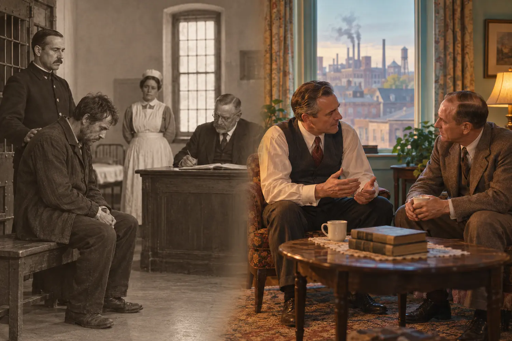
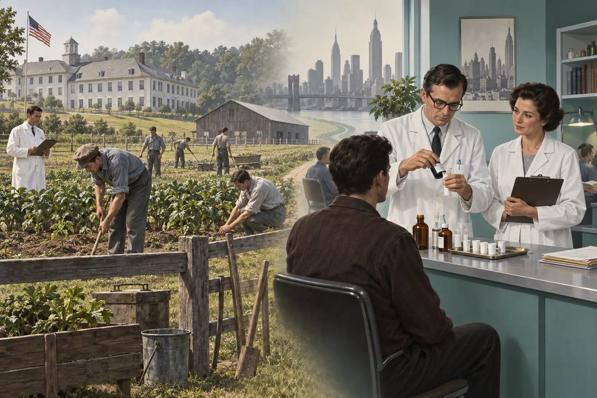
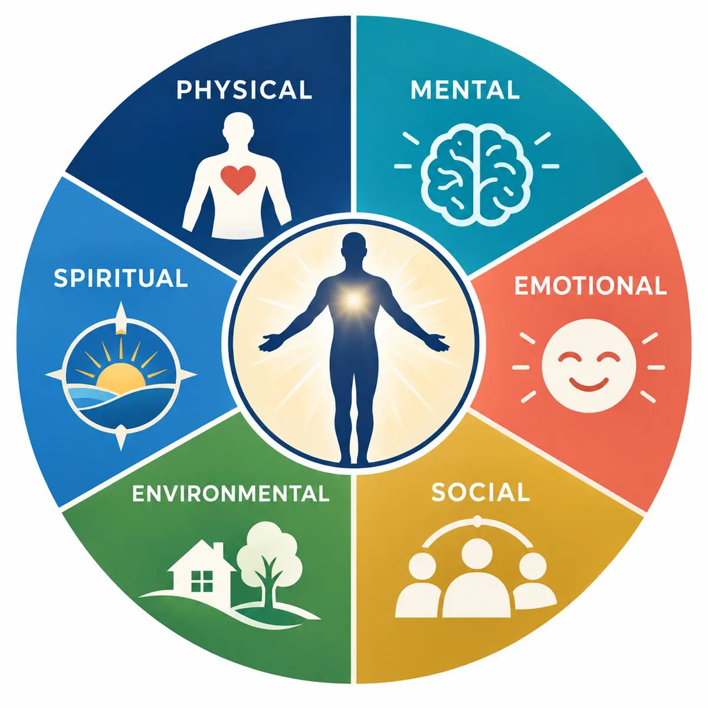

Recovery is shaped not only by individual motivation, but also by
belonging, work, housing, healthcare, dignity, evidence, and
accountable institutions.
Opening story · when community becomes control
14.1 Synanon: When the Community
Became the Cure—and the Leader Became the Danger
Synanon’s story contains both mutual aid and coercion. Community
structure can support recovery, but power without safeguards can
turn treatment into control.
Synanon began in California in 1958 under Charles “Chuck” Dederich, a
former member of Alcoholics Anonymous. At a time when people with
addictions were widely treated as morally defective and many programs
rejected them, Synanon offered a residential community in which
members lived, worked, ate, and tried to remain drug-free together.
The early community provided something formal institutions often did
not: a place for people pushed to society’s margins to become workers,
peers, and contributors. Residents maintained buildings, prepared
meals, operated businesses, and helped sustain the group. Shared work
created routine and practical interdependence; peers who understood
stigma and hardship offered belonging.
A limited Hull House comparison
Like Jane Addams’s Hull House, Synanon demonstrates how a
community can combine residence or gathering space, work,
education, relationships, and mutual assistance. Both challenged
the idea that marginalized people needed only blame.
An essential difference
Hull House was a settlement institution connected to democratic
reform and public service. Synanon became an insular residential
organization centered increasingly on one leader. The comparison
concerns community resources—not equivalent governance or ethics.
“The Game,” shared vulnerability, and confrontation
Synanon’s best-known practice was the Game, an
intense group encounter in which participants confronted one another’s
excuses and behavior. Some members experienced honesty, recognition,
and group accountability. The same format could also normalize verbal
aggression, humiliation, and obedience. Shared histories of rejection
and hardship may deepen solidarity, but sociology should not
automatically call this “trauma bonding,” a term with a narrower
meaning involving attachment within abusive power relationships.
The structure changed as authority concentrated.
Synanon stopped presenting itself simply as a temporary route back
into ordinary community life and increasingly demanded permanent
commitment. Dederich’s authority expanded; rules invaded intimate
decisions; coercion and violence escalated. Head shaving—particularly
the forced shaving of women’s heads—became a visible instrument of
conformity and punishment, not an evidence-based haircut therapy.
By the late 1970s, Synanon was associated with armed enforcers and
attacks on critics. In the most notorious case, a rattlesnake was
placed in attorney Paul Morantz’s mailbox; he survived the bite.
Dederich later pleaded no contest to conspiracy connected to the
attack. The organization eventually collapsed amid criminal scrutiny
and loss of tax-exempt status.
What should treatment preserve—and prevent?
Preserve
Belonging, meaningful work, peer knowledge, stable housing,
routine, mutual responsibility, and a social identity larger than
“addict.”
Prevent
Humiliation, isolation from outside support, forced appearance
changes, violence, leader worship, unreviewable authority, and
punishment disguised as treatment.
A program can contain valuable social mechanisms and still become
abusive.
Recognizing the value of community does not excuse coercion.
Recognizing Synanon’s later abuses does not erase the unmet needs that
made its early community attractive.
Carry this question through Section 14: How can
treatment create solidarity, purpose, and responsibility while
protecting autonomy, evidence-based care, outside relationships, and
the right to leave?
14.2 From Moral Punishment to
Treatment
Treatment history is not a simple march from cruelty to science. Moral
judgment, confinement, mutual aid, medicine, work, and community have
repeatedly overlapped. The sociological question is which institution
defines the problem—and whether the person is treated as a sinner,
criminal, patient, community member, or some combination.

Alcohol treatment moved unevenly from confinement and moral
judgment toward a disease model and organized peer support.
Alcohol treatment
Earlier responses commonly treated alcohol dependence as vice,
disorder, or insanity. Moving people from jail to an asylum
changed the institution but did not necessarily provide effective
treatment. In 1935, Bill Wilson and Dr. Bob Smith’s meetings in
Akron, Ohio, helped form Alcoholics Anonymous. AA framed
alcoholism as an illness requiring lifelong attention and mutual
support, while its Twelve Steps incorporated spiritual language.
Its great social contribution was not simply a rule of abstinence:
it created repeated contact, shared identity, sponsorship, and a
community available after formal treatment ended.

Federal “narcotic farms” combined custody, research, work, and
treatment; later maintenance programs made medication central.
Narcotics treatment
The federal Public Health Service hospitals opened in Lexington,
Kentucky, and Fort Worth, Texas, in the 1930s. Nicknamed “narcotic
farms,” they combined secure custody, detoxification, research,
occupational work, and rehabilitation—but relapse after release
remained common. Synanon later emphasized a self-supporting
therapeutic community. In 1965, Dr. Vincent Dole and Dr. Marie
Nyswander developed methadone maintenance in New York, shifting
the goal from rapid withdrawal alone to stabilizing physiology,
reducing craving, and restoring daily life.
Historical lesson: detoxification can manage
withdrawal, but detoxification by itself is not treatment for a
substance use disorder. Long-term outcomes depend on what follows:
medication when indicated, counseling, housing, relationships, work,
and continuing support.
14.3 Major Treatment Modalities
Effective treatment is usually a matched combination rather than a
competition between one medication, one counselor, or one program.
Treatment should be matched to the substance, severity, co-occurring
conditions, safety, housing, responsibilities, culture, and the
person’s goals. No modality works for every person, and a person’s
plan should change as needs change.
💊
Medication and pharmacological care
Methadone, buprenorphine, and naltrexone can treat opioid use
disorder; medications also exist for alcohol and tobacco use
disorders. A
maintenance or metabolic approach treats
continued medication as legitimate chronic-disease care. A
psychotherapeutic approach uses medication to
stabilize the body while counseling addresses emotions, behavior,
and circumstances. These are not mutually exclusive.
🧠
Behavioral and psychological therapies
Individual, group, and family therapies can build coping skills,
identify triggers, strengthen motivation, address trauma, and
change reinforcement. Empathy and collaboration generally protect
engagement better than humiliation or unchecked confrontation.
🏠
Residential and therapeutic communities
Twenty-four-hour programs can provide safety, structure,
counseling, education, shared work, and separation from a
dangerous setting. Reentry and aftercare are essential: a
protected residence cannot reproduce every pressure awaiting a
person outside it.
📅
Outpatient and intensive outpatient care
People live at home while receiving medication, counseling,
testing when clinically justified, and group or family services.
This can preserve work and caregiving, but transportation, housing
instability, and exposure to the old setting can complicate
participation.
🤝
Mutual-help and recovery groups
AA, NA, SMART Recovery, and other peer groups can provide
belonging, practical knowledge, accountability, and continuing
contact. They are valuable supports but are not identical to
professional medical or mental-health treatment.
⚖️
Justice-connected and prison-based treatment
Diversion programs can substitute individualized community
treatment for incarceration, while prison programs recognize that
most incarcerated people return to society. Coercion raises
ethical concerns; success depends on appropriate care, procedural
fairness, continuity after release, and avoiding punishment for
symptoms of illness.
Two historically influential combinations: The
Minnesota model combined a residential setting and
Twelve-Step orientation with professional assessment, group work,
education, and continuing care.
Treatment Alternatives to Street Crime (TASC) linked
eligible justice-involved people to individualized community treatment
instead of relying only on prosecution or incarceration. Both
illustrate that a “program” is usually a package of institutions and
practices rather than one technique.
How the modalities fit together
Modality
Best contribution
Limit if used alone
Useful connection
Medication
Reduces withdrawal, craving, or relapse risk
May not repair trauma, housing, or relationships
Counseling, primary care, continuing monitoring
Behavioral therapy
Builds coping, motivation, and new reinforcement
Cannot always control severe withdrawal or an unsafe supply
Medication, family and peer support
Residential care
Provides intensive structure and safety
Benefits may fade without reentry preparation
Housing, education, work, and aftercare
Outpatient care
Preserves ordinary roles and community ties
Home setting may remain unstable or high risk
Transportation, housing, flexible scheduling
Mutual help
Creates belonging and long-term peer contact
Cannot replace medical care for every condition
Professional treatment and recovery supports
Two treatments requiring special caution
Heroin-assisted treatment has been used under
tightly controlled medical conditions in several countries for a
small group with severe opioid use disorder who did not benefit from
standard treatments. This is not unrestricted heroin access; it
involves known dose, supervised administration, and continuing care.
Ultra-rapid opioid detoxification under heavy sedation
attempts to compress withdrawal into hours, but it carries serious
medical risks and has not demonstrated superior long-term outcomes.
Withdrawal management must be followed by evidence-based treatment
and overdose-prevention planning because tolerance falls.
14.4 Gender-Responsive and
Trauma-Informed Treatment
Equal access does not always mean identical services. Childcare,
safety, trauma care, reproductive healthcare, and work opportunity
can determine whether treatment is reachable.
Much early treatment research and program design centered men, then
treated the male experience as universal. Gender-responsive treatment
asks how social roles, power, trauma exposure, caregiving, stigma, and
economic opportunity shape both substance use and access to care. It
should include women while also listening to transgender, nonbinary,
and gender-diverse people whose safety and healthcare needs may
differ.
BarrierInstitutional responseChildcare and fear of losing custodyOn-site childcare, family-centered care, confidentiality, and clear
child-welfare proceduresPhysical or sexual traumaChoice of clinician, privacy, emotional safety, evidence-based
trauma care, and no humiliating confrontationPregnancy and reproductive healthNonpunitive prenatal care, medication when indicated, coordinated
obstetric and addiction treatmentEconomic dependence and restricted work opportunityEducation, transportation, benefits navigation, job training, equal
career pathways, and safe housingLabels such as “bad mother” or “sicker than men”Person-first assessment based on individual needs rather than
gender stereotypes
The treatment principle: do not use trauma,
pregnancy, parenthood, or mental-health complexity as reasons to
exclude someone from care. Those conditions are reasons to coordinate
more complete care.
14.5 Recovery Requires Total
Health

A six-component wellness model separates mental functioning from
emotional experience and adds environment and meaning or purpose.
WHO’s constitutional definition establishes that health is more
than physical health alone: it includes
physical, mental, and social well-being. Expanded
wellness models add
emotional, environmental, and spiritual
dimensions. Here, spiritual health means meaning, values, hope,
and purpose; it may involve religion for some people but does not
require it.
Substance use may become connected to emotional pain, traumatic
memories, isolation, social identity, untreated mental illness, an
unsafe environment, or lack of purpose. Focusing only on stopping
the substance can therefore leave the conditions that initiated,
escalated, or maintained the behavior unchanged.
Physical
Withdrawal, sleep, nutrition, pain, wounds, infections,
medication, and primary care.
Mental
Attention, thought patterns, psychiatric conditions, learning,
decision-making, and cognitive health.
Emotional
Recognizing feelings, tolerating distress, processing grief or
trauma, and regulating responses.
Safe housing, transportation, neighborhood conditions, product
safety, food, and freedom from violence.
Spiritual
Meaning, ethics, hope, identity, purpose, and connection to
something larger than immediate distress.
From a treatment episode to a social reintegration system
1Stabilize
Withdrawal care, medication, safety, sleep, nutrition, and urgent
physical or mental healthcare.
2Understand
Assess substance, trauma, mental health, family, culture,
strengths, risks, and the person’s own goals.
3Rebuild
Therapy, education, family repair, housing, legal help, vocational
training, and new sources of reward.
4Reconnect
Work, caregiving, school, mutual-help or peer communities,
recreation, and civic contribution.
5Continue
Aftercare, medication as long as beneficial, follow-up, rapid
return to care, and plan revision without shame.
A system of giving back
People with lived experience can become trained peer-support
specialists, outreach workers, recovery coaches, educators,
technicians, counselors, and program advisors. Their knowledge
becomes employment and improves services for the next person. Public
funding, insurance, and carefully directed tax revenue can support
treatment capacity, mental healthcare, childcare, recovery housing,
education, evaluation, and jobs—while safeguards prevent profit from
replacing patient welfare.
The social return: fewer overdoses and infections,
less emergency and criminal-justice spending, stronger families,
more stable housing, greater employment and tax participation, and
increased solidarity. A holistic approach does not promise that
every person will become abstinent. It creates more ways for people
to survive, improve health, find purpose, and contribute to society.